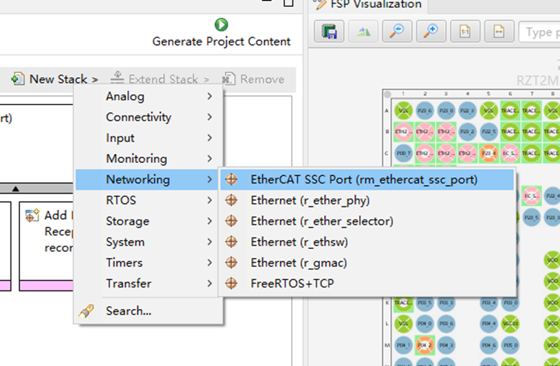
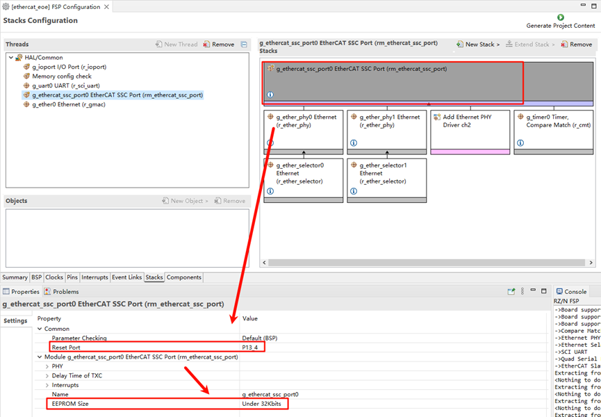
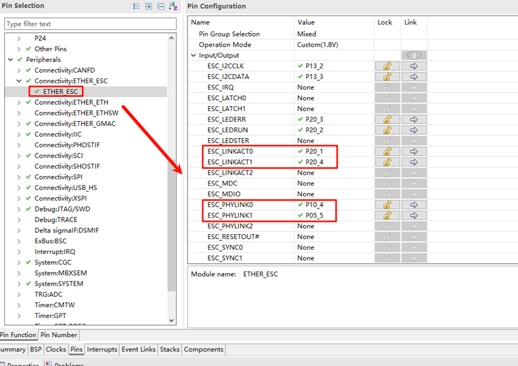
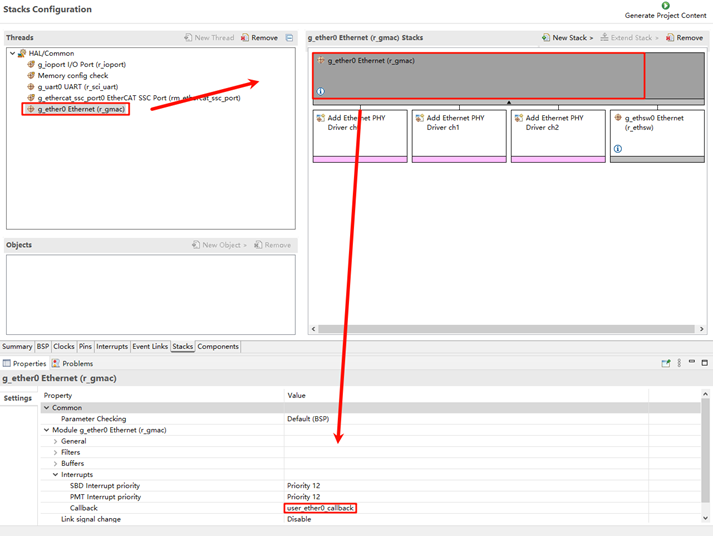
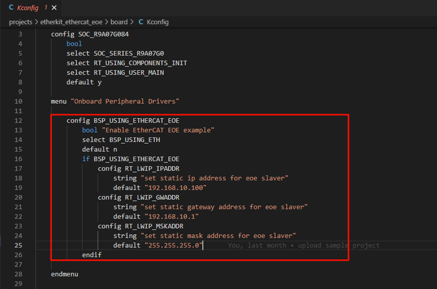
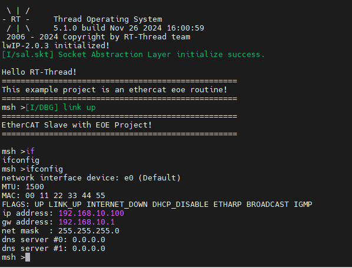
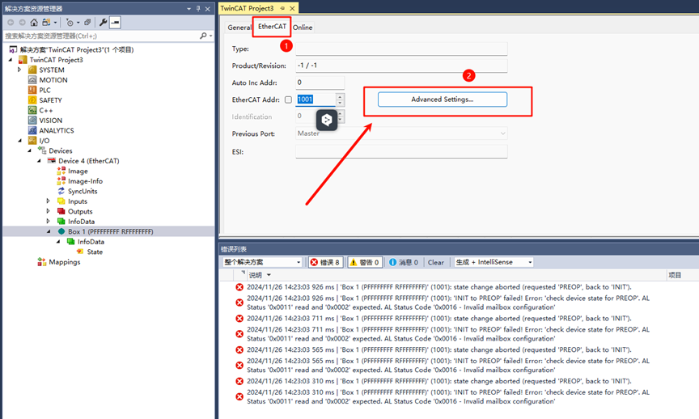
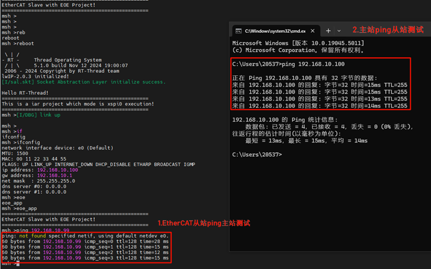
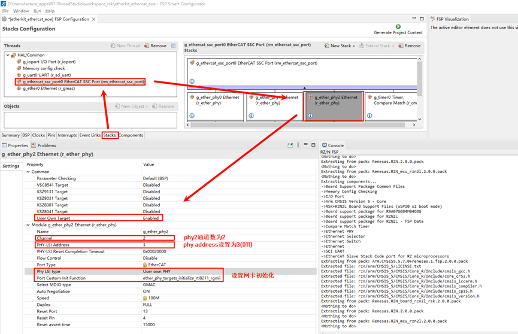
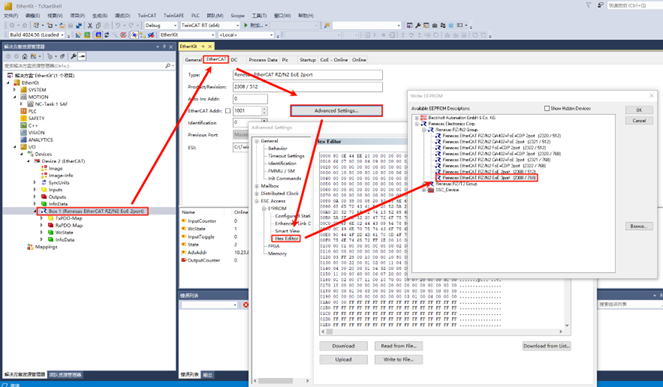

EtherCAT EOE 例程
中文 | English
简介
EtherCAT EoE（Ethernet over EtherCAT）是 EtherCAT 协议中的一种通信协议，用于在 EtherCAT 网络上传输标准以太网数据包。它允许非实时的以太网通信与实时的 EtherCAT 通信共存，为工业自动化系统提供了灵活的网络集成能力。
以下是 EoE 的主要特点和功能：
以太网隧道传输：
EoE 在 EtherCAT 通信帧中封装标准的以太网数据包，使标准以太网通信协议（如 TCP/IP、UDP、HTTP 等）可以通过 EtherCAT 网络传输。
扩展网络功能：
支持将 EtherCAT 从站作为虚拟以太网设备加入到 TCP/IP 网络中。
允许通过 EtherCAT 通信链路访问远程的标准以太网设备。
高效整合：
EoE 的实现不会影响 EtherCAT 的实时性能。
非实时的以太网通信与实时的 EtherCAT 数据交换能够共存，各司其职。
使用场景：
设备管理：通过 IP 协议访问 EtherCAT 从站设备（如远程配置、诊断和固件更新）。
混合网络：集成需要标准以太网通信的设备（如摄像头、传感器或工控机）。
简化网络布线：
在工业自动化场景中，EoE 允许通过 EtherCAT 网络访问以太网设备，从而减少了独立以太网布线的需求。
典型应用：
工厂自动化系统中的远程监控和诊断。
工业机器人或生产设备与外部 IT 系统的通信桥接。
本节将演示如何使用Beckhoff TwinCAT3和EtherKit开发板实现EtherCAT EOE主从站通信。
前期准备
软件环境：
[RT-Thread Studio](https://download-redirect.rt-thread.org/download/studio/RT-Thread Studio_2.2.8-setup-x86_64_202405200930.exe)
硬件环境：
EtherKit开发板
网线一根
Jlink调试器
TwinCAT3配置
在启动TwinCAT3之前，我们还需要做一些配置操作：
安装ESI文件
启动TwinCAT之前，将发布文件夹中包含的ESI文件复制到TwinCAT目标位置：“…\TwinCAT\3.x\Config\IO\EtherCAT”
注意：当前版本的 ESI 文件位于：…\board\ports\ethercat\ESI_File\Renesas EtherCAT RZT2 EoE.xml”
添加TwinCAT网卡驱动
添加 TwinCAT 的以太网驱动程序（仅限首次使用配置即可）；从开始菜单中，选择 [TwinCAT] → [Show Realtime Ethernet Compatible Devise…]，从通信端口中选择连接的以太网端口并安装。

在这里我们能看到目前PC端的所有以太网适配器信息，选择我们测试要用的端口后，点击安装：

检查网络适配器，可以看到已经成功安装了：

FSP配置说明
接下来就是引脚初始化配置了，打开安装的RZN-FSP 2.0.0，选择我们工程的根目录：

我们进行以下外设及引脚的配置：点击New Stack，并添加 ethercat_ssc_port 外设：

配置ethercat_ssc_port：修改Reset Port为P13_4，同时EEPROM_Size大小设置为Under 32Kbits；

使能网卡类型、配置网卡设备参数，这里我们添加两个phy（phy0和phy1），其中需要注意的是，EtherKit使用的是rtl8211网卡，并不在瑞萨FSP的支持范围内，但好在瑞萨预留了用户自定义网卡接口，因此按照如下设置来配置网卡，同时设置MDIO类型为GMAC，设置网卡初始化回调函数ether_phy_targets_initialize_rtl8211_rgmii()；

网卡引脚参数配置，选择操作模式为RGMII：

ETHER_ESC设置：

ETHER_GMAC配置：

为ethercat_ssc_port添加cmt定时器并配置中断优先级：

添加Ethernet外设：

ethernet中断触发回调设置为：user_ether0_callback

最后点击Generate Project Content生成底层驱动源码。
构建配置
修改sconscript：进入工程找到指定路径下的文件：.\rzn\SConscript，替换该文件为如下内容：
Import('RTT_ROOT')
Import('rtconfig')
from building import *
from gcc import *
cwd = GetCurrentDir()
src = []
group = []
CPPPATH = []
if rtconfig.PLATFORM in ['iccarm'] + GetGCCLikePLATFORM():
if rtconfig.PLATFORM == 'iccarm' or GetOption('target') != 'mdk5':
src += Glob('./fsp/src/bsp/mcu/all/*.c')
src += Glob('./fsp/src/bsp/mcu/all/cr/*.c')
src += Glob('./fsp/src/bsp/mcu/r*/*.c')
src += Glob('./fsp/src/bsp/cmsis/Device/RENESAS/Source/*.c')
src += Glob('./fsp/src/bsp/cmsis/Device/RENESAS/Source/cr/*.c')
src += Glob('./fsp/src/r_*/*.c')
CPPPATH = [ cwd + '/arm/CMSIS_5/CMSIS/Core_R/Include',
cwd + '/fsp/inc',
cwd + '/fsp/inc/api',
cwd + '/fsp/inc/instances',]
if GetDepend('BSP_USING_ETHERCAT_EOE'):
src += Glob('./fsp/src/rm_ethercat_ssc_port/*.c')
CPPPATH += [cwd + '/fsp/src/rm_ethercat_ssc_port']
group = DefineGroup('rzn', src, depend = [''], CPPPATH = CPPPATH)
Return('group')
Kconfig修改：打开工程下的文件（projects\etherkit_ethercat_eoe\board\Kconfig），在Onboard Peripheral Drivers选项中加入EOE配置：
config BSP_USING_ETHERCAT_EOE
bool "Enable EtherCAT EOE example"
select BSP_USING_ETH
default n
if BSP_USING_ETHERCAT_EOE
config RT_LWIP_IPADDR
string "set static ip address for eoe slaver"
default "192.168.10.100"
config RT_LWIP_GWADDR
string "set static gateway address for eoe slaver"
default "192.168.10.1"
config RT_LWIP_MSKADDR
string "set static mask address for eoe slaver"
default "255.255.255.0"
endif
如下图所示：

使用studio开发的话需要右键工程点击 同步scons配置至项目；如果是使用IAR开发请在当前工程下右键打开env，执行：scons –target=iar 重新生成配置。
RT-Thread Studio配置
完成FSP配置之后，引脚及外设的初始化就暂告一段落了，接下来需要我们使能EtherCAT EOE示例，打开Studio，点击 RT-Thread Settings，使能EOE示例：
下面我们还需要配置禁用dhcp功能并使用静态IP，点击组件->使能lwip堆栈，选择禁用DHCP；

使能完毕后我们保存settings配置并同步scons配置，同时编译并下载程序，复位开发板后观察串口日志：

EtherCAT EOE配置
新建TwinCAT工程
打开TwinCAT软件，点击文件->新建->新建项目，选择TwinCAT Projects，创建TwinCAT XAR Project(XML format)工程：

从站启动EOE App
将EtherKit开发板上电后，需要使用网线连接ETH0网口，ethercat会默认运行。

从站设备扫描
新建工程之后，在左侧导航栏找到Devices，右键选择扫描设备。正常来说如果扫描从站设备成功的话是会显示：Device x[EtherCAT]；而扫描失败则显示的是：Device x[EtherCAT Automation Protocol]，此时就代表从站初始化失败。
点击Ok后会弹出一个窗口：Scan for boxes，点击确认后，会再次弹出窗口：Activate Free Run，由于我们首次使用EOE还需要更新EEPROM固件，所以暂时先不激活。
更新EEPROM固件
回到TwinCAT，在左侧导航栏中，由于我们已经成功扫描到从站设备，因此可以看到主从站的配置界面：

我们双击Box 1，在中间界面的上方导航栏中单击EtherCAT，并点击Advanced Settings…：

这里按图示点击Download from List…：
我们写入ESI固件到EEPROM中，这里由于我们配置的是双网口，所以选择Renesas EtherCAT RZ/N2 EOE 2port，如果你配置的是三网口的话则选择3port后缀的ESI文件进行下载。

下载完成之后，我们右键Device x(EtherCAT)移除设备后重新扫描并添加设备，并完成激活工作（参考上文）。

EtherCAT EOE通信
在完成EEPROM下载ESI固件并重新扫描添加设备后，激活Device我们可以观察到，板载有两颗绿色LED亮起（通信正常），并且其中一颗保持高频率闪烁一颗保持常亮，此时主从站就可以建立起正常的通信了。
EIO测试
由于我们提供的EOE工程集成了EIO协议，因此可直接进行EIO测试，在本例程中，我们提供三个USER LED作为EIO的输入，回到TwinCAT，依次点击Device x(EtherCAT)->Box 1(Renesas EtherCAT RZ/N2 EOE 2port)->RxPD0-Map->OutputCounter：
此时的开发板默认的三颗USER LED还处于灭灯状态，这里我们点击左上角的Online，并且 Write Value：1
此时可以发现从站开发板同时亮起LED0（红灯），EIO测试正常，当然也可以随意尝试其他value组合，会有不同的LED阵列亮暗行为。
EOE测试
打开以太网适配器，选择主站所使用的适配器并设置静态IP：
回到TwinCAT，我们点击Box 1，选择EtherCAT->Advanced Settings…->MailBox->EOE->设置IP Port，设置从站IP信息：

完成这些配置后，我们就能测试使用EtherCAT EOE对主从站进行ping测试了：
主站IP：192.168.10.99
从站IP：192.168.10.100

拓展说明：3端口以太网EOE通信
目前示例工程默认为2端口以太网EOE，如需使用三网口EOE通信请遵循本章说明进行配置；
FSP配置
首先仍然是打开工程下的FSP配置文件，我们为SSC stack添加第三个phy；

然后配置phy2的通道数为2，phy address为3（根据原理图手册查询可知），同时配置网卡型号为用户自定义，并且设置以太网初始化回调函数；

接下来配置引脚，使能ETH2；

接着我们配置ESC对应ETH2的LINK引脚，分别配置ESC_LINKACT2(P22_1)和ESC_PHYLINK2(P00_5)；此处需要注意：此处如果P22_1被占用，需要先手动将该引脚复用功能禁用后，再使能此项；

完成上述配置后就可以点击生成源码了，回到工程编译并将程序下载开发板中；
ESI固件更新
同样首先我们需要等待开发板EOE从站成功运行，接着我们打开TwinCAT 3软件扫描设备，扫描到EtherCAT设备后先暂时不激活，弹窗点击否即可；

参考**“更新EEPROM固件”**一节，一样的步骤，只不过这次需要选择更新的固件为：Renesas EtherCAT RZ/N2 EoE 3port [2308 / 768]，点击烧录固件；

烧录完成后我们需要重新删除设备并再次扫描，可以看到从站设备描述已经更新为Box 1 (Renesas EtherCAT RZ/N2 EoE 3port)；

后续EOE开发请参考前几章节。